Burgers artesanales
Carne, ingredientes reales,
sabores únicos.
Reservá tu mesaBaum Pinamar
Cervecería · Brewpub
en el corazón de Pinamar
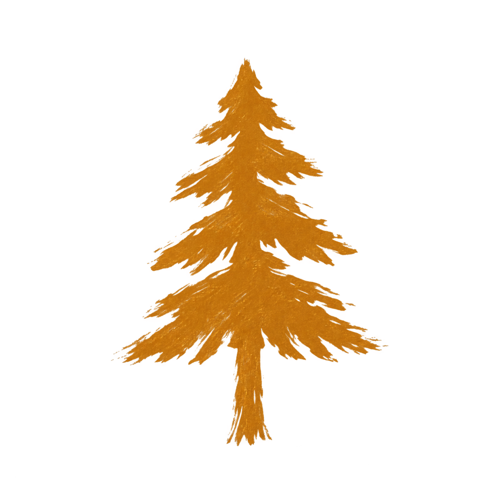
Sabores que van bien con una buena cerveza
Carne, ingredientes reales,
sabores únicos.
Estilos propios, espíritu artesanal.
Para compartir, siempre es mejor.
Masa casera, ingredientes frescos.
Te esperamos en Baum Pinamar
También podés disfrutar Baum donde quieras
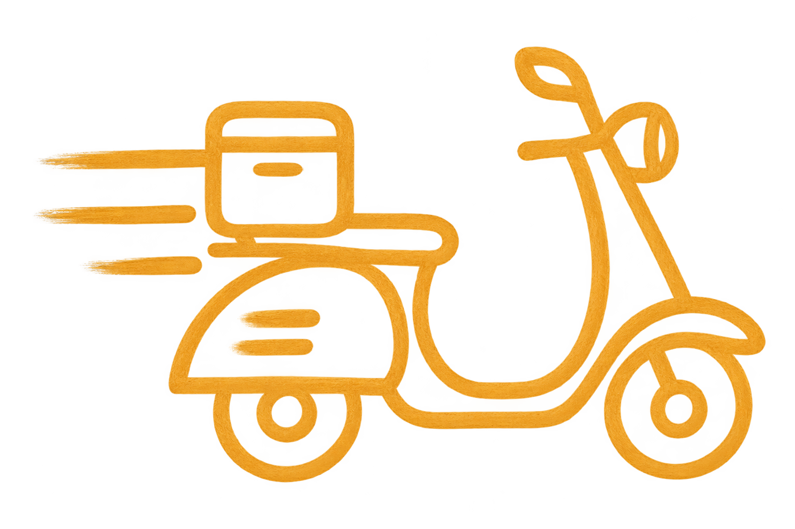
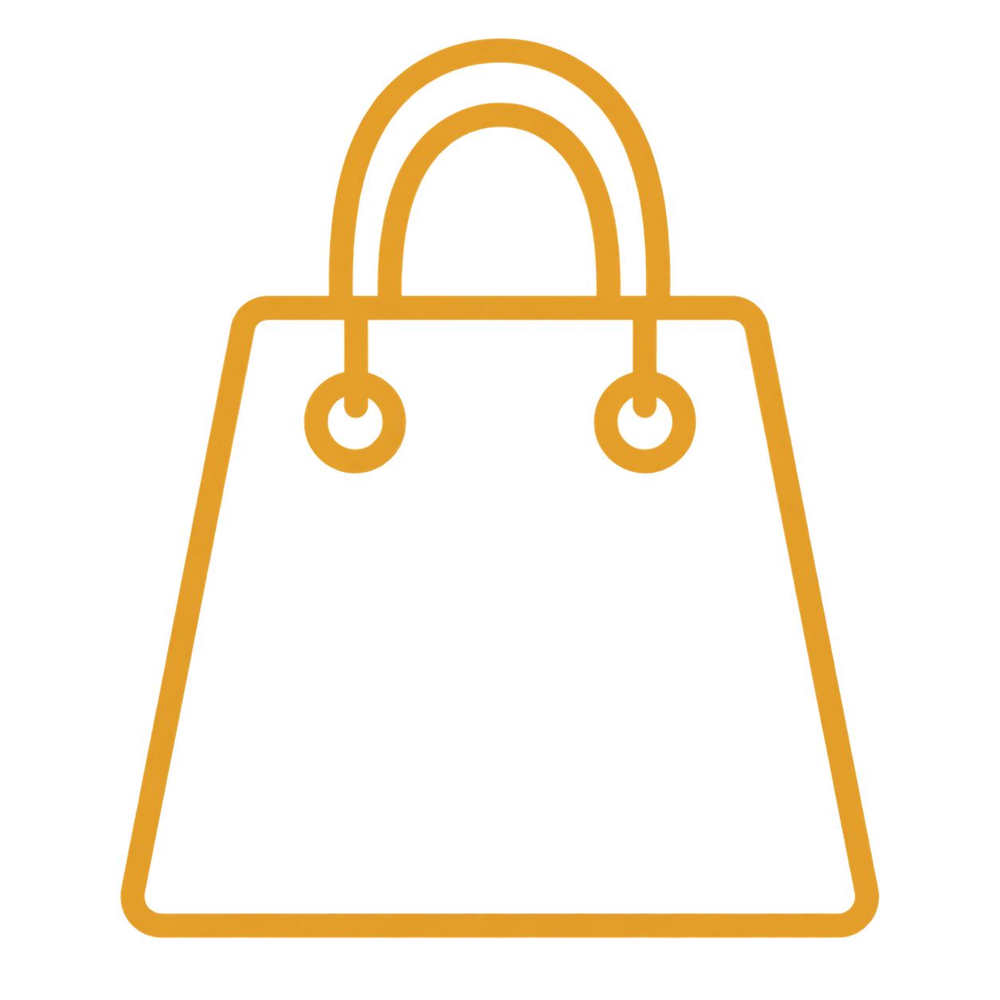
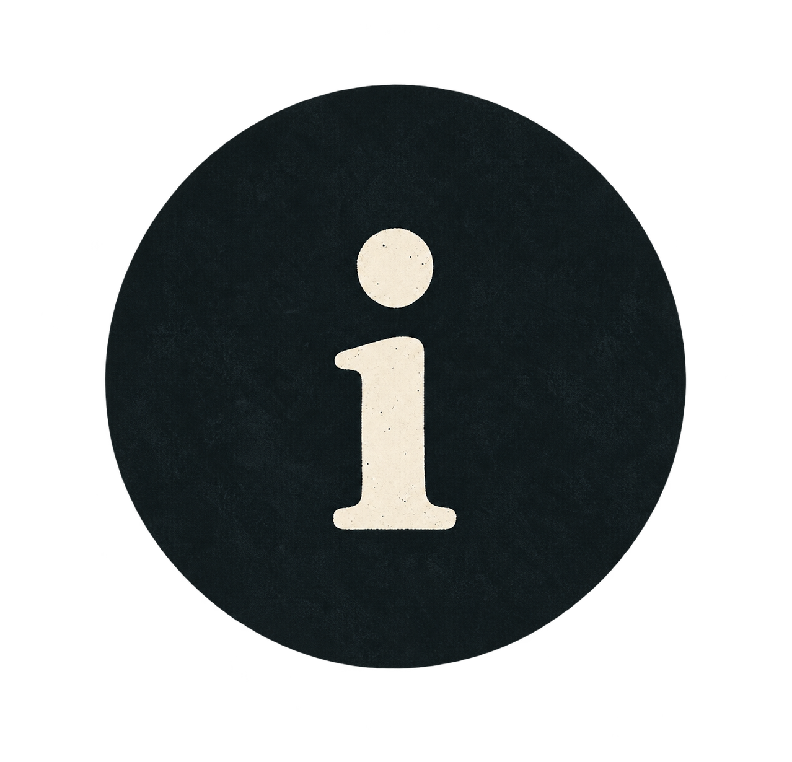
Nuestro foco es la experiencia
en el local. El servicio de delivery
está sujeto a disponibilidad.
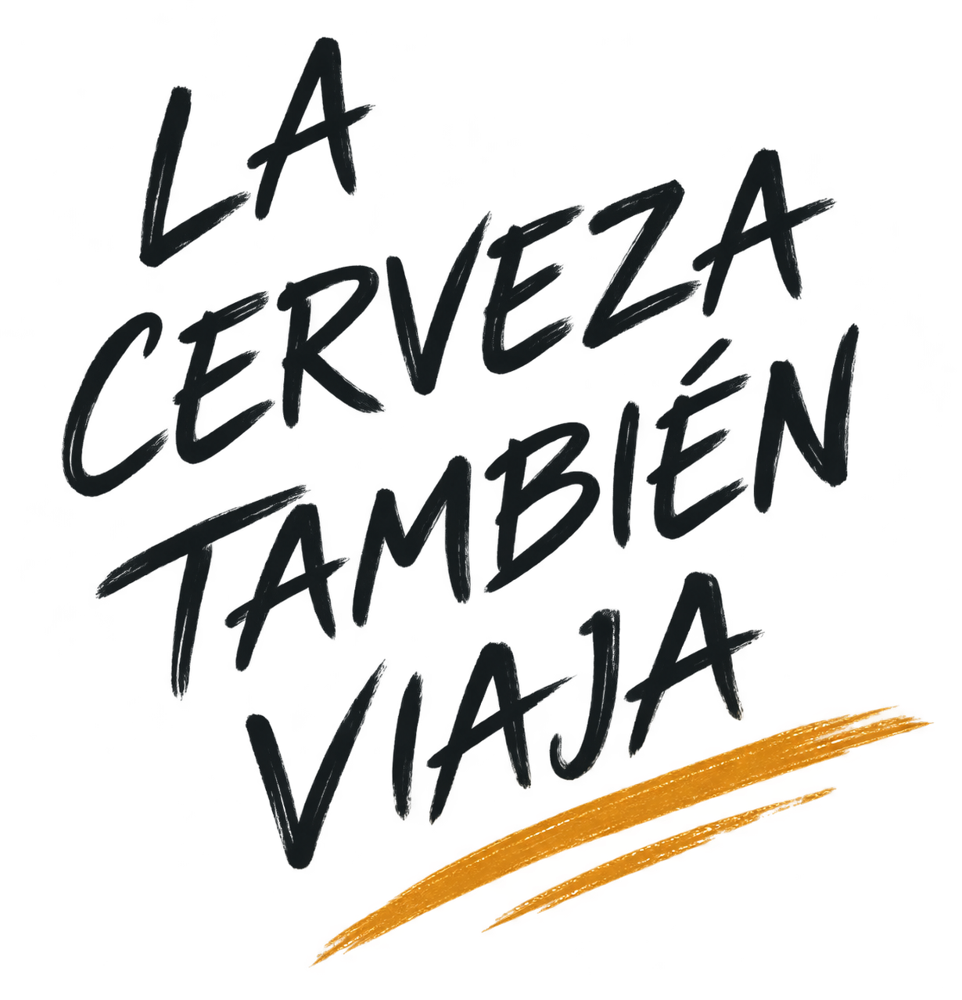
Un poco de lo que se vive en Baum Pinamar
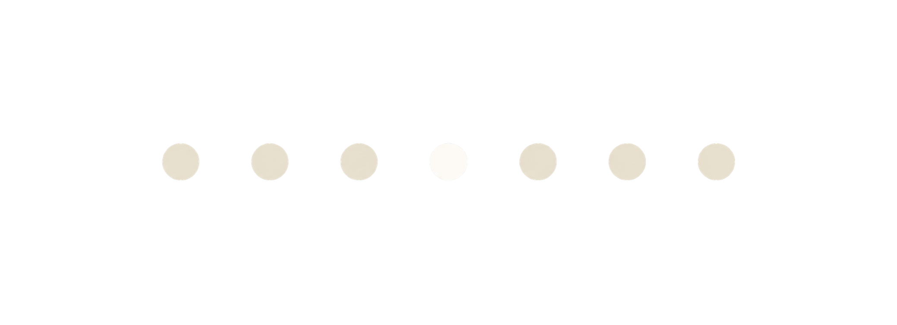
Simbad el Marino y Jason, Pinamar.
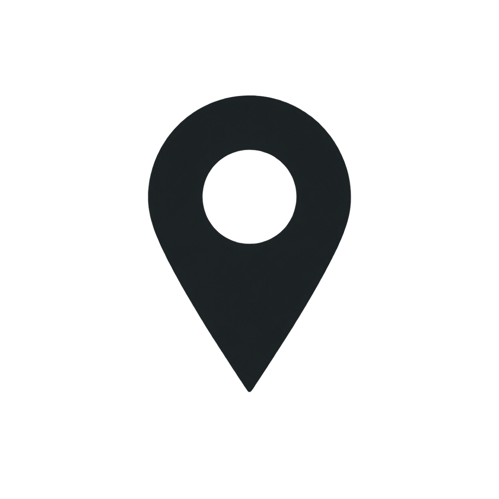
Baum Pinamar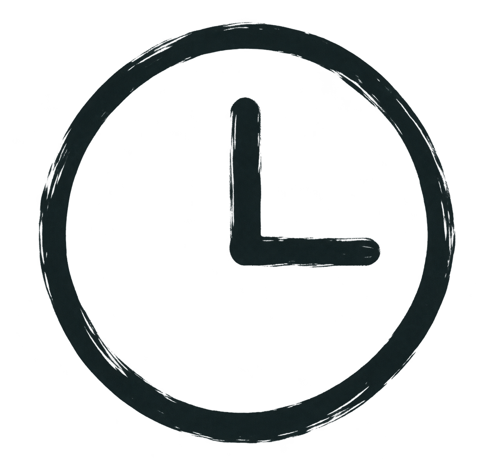
| Lunes | Cerrado |
| Martes | 18:00 – 01:00 |
| Miércoles | 18:00 – 01:00 |
| Jueves | 18:00 – 02:00 |
| Viernes | 18:00 – 02:00 |
| Sábado | 12:00 – 02:00 |
| Domingo | 12:00 – 01:00 |
Simbad el Marino y Jason, Pinamar.
@baum.pinamar
consultas@baumpinamar.com
+54 9 2254 55-1234
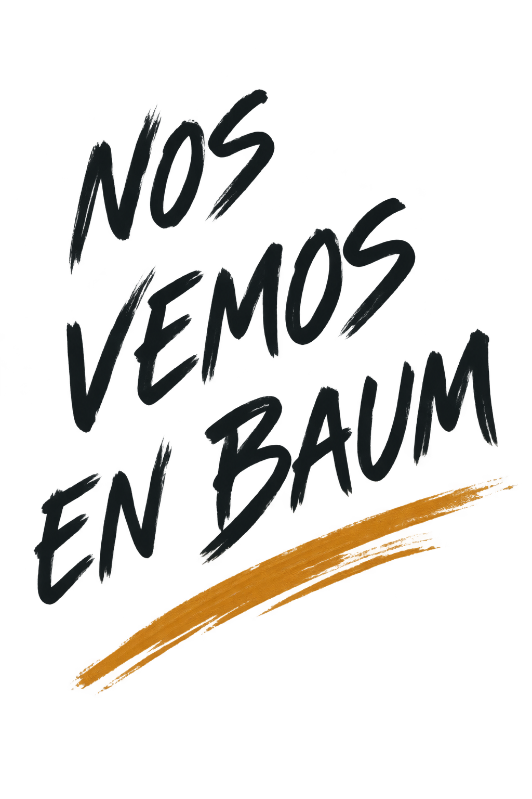
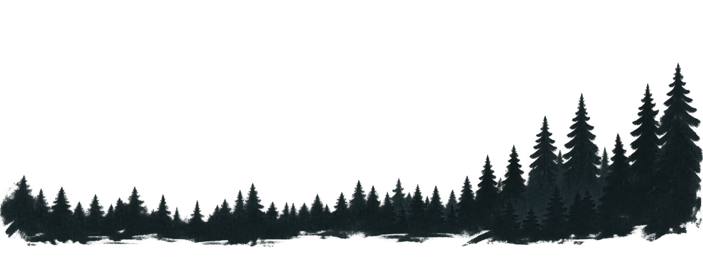